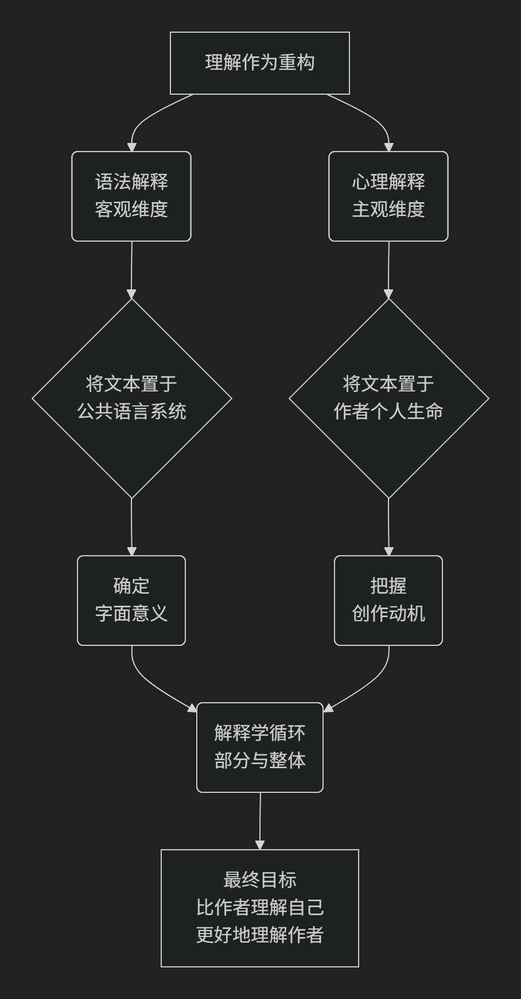

Friedrich Schleiermacher
基于弗里德里希·施莱尔马赫（Friedrich Schleiermacher）解释学的核心思想对陈京元博士案件进行评价。
施莱尔马赫是19世纪初德国神学家和哲学家，被公认为 现代解释学的奠基人。他的核心思想完成了一次根本性的转折：将解释学从一套用于特定文本（如《圣经》、法律文献）的、零散的释义规则，提升为一门适用于所有文本理解的、普遍的方法论体系。
他的核心命题可以概括为：“理解的首要任务不是避免误解，而是避免误解。” 这意味着误解是常态而非例外，因此解释必须成为一种有意识的、系统化的艺术。其思想精髓可归结为三大支柱：
一、解释学的普遍化
这是施莱尔马赫最根本的贡献，他实现了解释学的“哥白尼式革命”。
从前：解释学是许多“特殊解释学”的集合。有神学解释学（解释《圣经》）、法学解释学（解释法律）、语文学解释学（解释古典文献）。每种都有自己的一套规则，旨在解决特定文本中的疑难问题。
施莱尔马赫之后：他提出，解释学不应是零散的技术，而应成为一门普遍的、适用于一切文本解释的艺术。因为误解的可能性存在于一切人类交流中，所以理解需要一套普遍的方法论来指导。
目标：解释学的任务不再是仅仅解决文本中的“难点”，而是**系统地理解文本整体**。
二、理解的双重任务：语法解释与心理解释
施莱尔马赫认为，完整的理解必须同时进行两个相互关联的维度分析，其关系如下图所示：

语法解释（客观维度）
对象：文本作为 公共语言系统 的一部分。
方法：分析词汇、语法、句法、文体风格等。理解作者所使用的 语言 的公共规则和时代背景。
目标：确定文本的 字面意义。
心理解释 / 技术解释（主观维度）
对象：文本作为 作者个人思想生命 的表达。
方法：通过“移情”或“直觉”，重构作者的内在创作过程。思考作者为何在特定情境下，出于何种动机和目的，选择这样的表达方式。
目标：把握文本的 深层意图和个性色彩。
两者关系：这两个方面 并非先后顺序，而是辩证统一的。理解语言有助于洞察作者思想，而对作者思想的洞察又能深化对语言选择的理解。它们共同构成“解释学循环”的一部分。
三、解释学循环与核心箴言
这是施莱尔马赫方法论的核心运作机制和终极目标。
解释学循环：
经典形式：部分与整体的循环。要理解整个文本（整体），需要理解其各个部分（如词语、句子）；而要理解部分，又必须对整体有一个预先的把握。
施莱尔马赫的扩展：他将循环扩展到 文本与作者生命背景的循环，以及 文本与整个语言文化系统的循环。
解决方法：这不是一个恶性循环，而是一个**螺旋式上升的过程**。理解者需要在部分和整体之间来回往复，不断修正和深化理解，直至达到一种连贯的统一性。
核心箴言：“比作者理解自己更好地理解作者。”
这是施莱尔马赫最著名的论断，体现了其解释学的雄心。
含义：作者在创作时，可能并未完全清晰地意识到自己思想的所有内涵和关联。解释者通过系统的语法和心理分析，可以重构作者无意识的创作过程，从而揭示出连作者本人都未曾察觉的文本深度和一致性。
基础：这一目标的可能性建立在 人类精神的同质性 上。解释者和作者共享共同的人性基础，因此解释者能够通过自我反思，来通达他人的精神世界。
—
核心要义总结
理论维度 |
核心命题 |
关键概念与贡献 |
|---|---|---|
学科定位 |
解释学应成为普遍方法论，适用于一切存在误解可能性的文本理解。 |
普遍解释学、避免误解的艺术 |
方法论核心 |
理解是语法解释与心理解释的辩证统一，二者缺一不可。 |
语法解释、心理解释/技术解释、移情 |
运作机制与目标 |
通过”解释学循环”实现”比作者理解自己更好地理解作者”。 |
解释学循环、部分与整体、重构作者意图 |
影响与意义
施莱尔马赫的思想影响深远：
奠基现代解释学：他开启了解释学从局部方法到普遍哲学的转向，直接影响了狄尔泰、海德格尔和伽达默尔。
强调作者意图：他的理论是后来“作者意图论”的源头，也与强调“文本自足”和“读者反应”的现代文论形成对话和张力。
方法论自觉：他使“理解”本身成为需要被严肃审视和方法论反思的对象。
总而言之，施莱尔马赫的核心思想在于，他将解释学从 被动的、辅助性的工具，转变为一项 积极的、创造性的理解活动。他教导我们，真正的理解不是简单地读取文字，而是一场 深入他人精神世界内部的、严谨的探险，其最终目标是通过系统的重构，达到对文本意义乃至人类精神活动更深刻、更完整的把握。